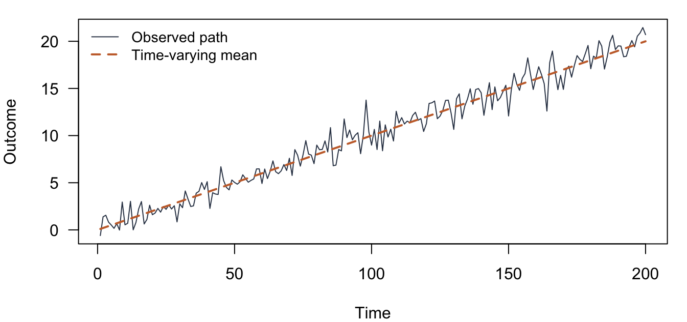
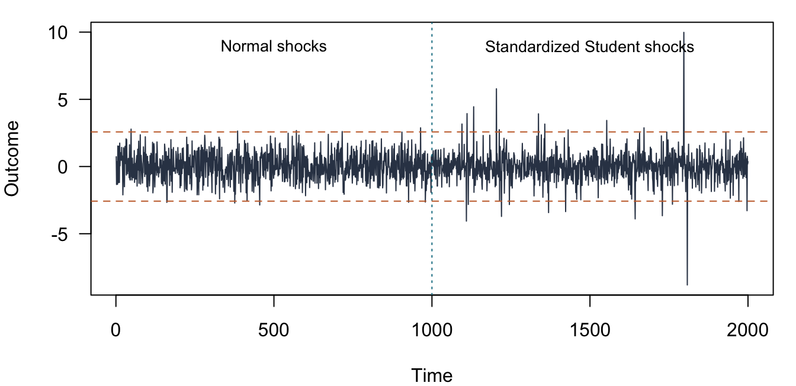
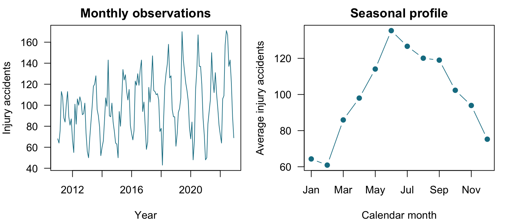
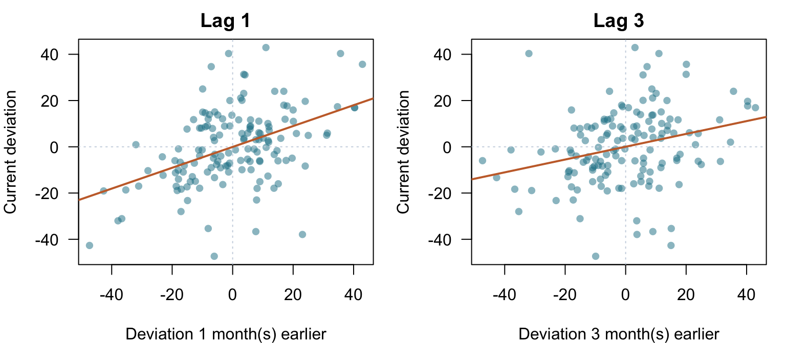
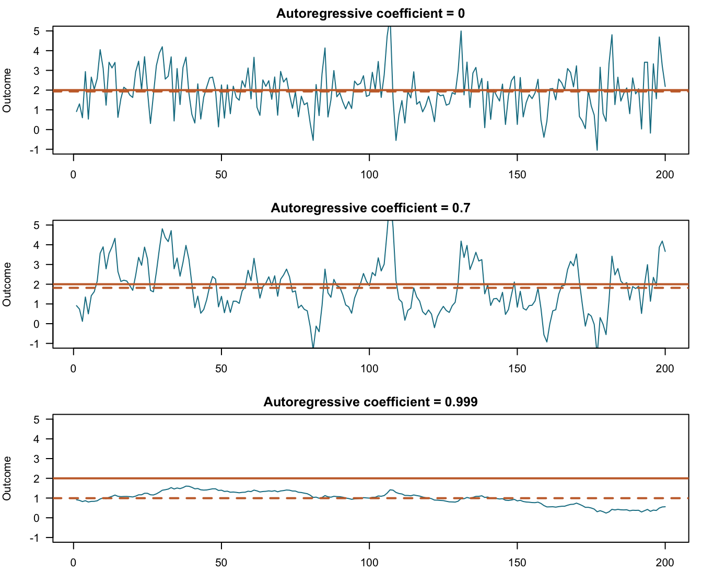
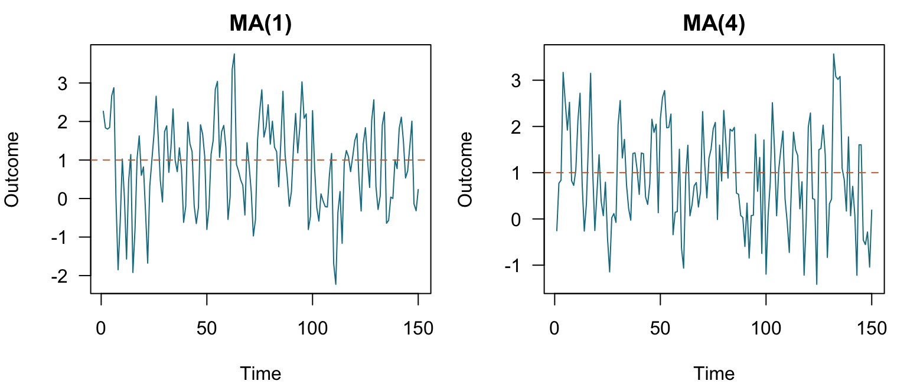
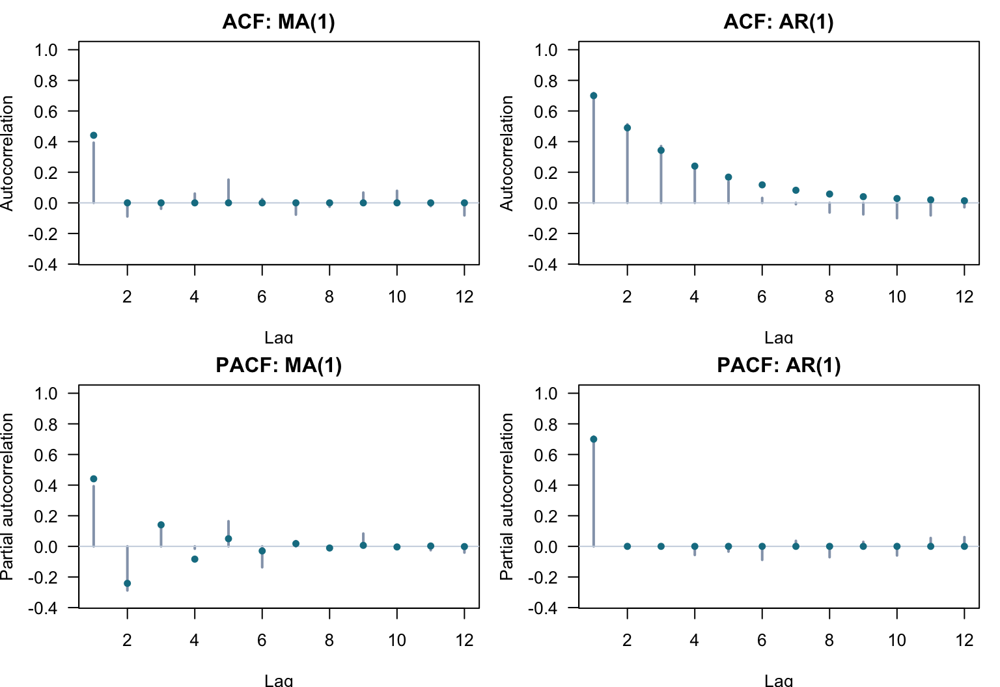
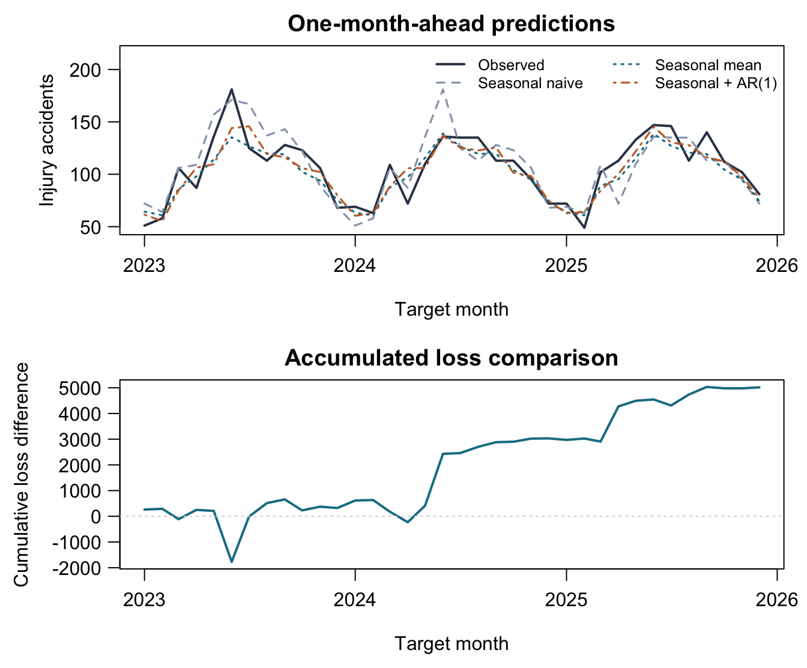

Chapter 8 Time Series
Prerequisites. Expectations, variances and covariances, the central limit theorem, linear regression, and basic matrix algebra.
After working through this chapter, you should be able to:
- Distinguish white noise, martingale differences, strict stationarity, and covariance stationarity.
- Compute autocovariances and long-run variances.
- Determine whether AR and MA representations are stable and causal.
- Use autocorrelation and partial autocorrelation for model identification.
- Construct point forecasts and forecast-error variances.
- Evaluate forecasts in and out of sample.
Roadmap. The chapter first develops the probabilistic language needed for time-indexed data. It then studies moving-average and autoregressive processes, including their identification, before turning to forecasting and forecast evaluation. Section 8.5 provides analytical applications.
8.1 Introduction to time series
Our running application is the monthly number of recorded injury accidents in Zurich. Chapter 4 separated a time trend from calendar-month effects; here we study dependence between successive months and use past observations to forecast new ones. Appendix 10.1 describes the data.
A time series is a sequence of random variables indexed by time: \(\{y_t\}_{t=-\infty}^{+\infty}=\{\dots,y_{-1},y_0,y_1,\dots\}\), with \(y_t\in\mathbb{R}^k\). In practice, we observe only a finite stretch, typically \(\{y_1,\dots,y_T\}\). Unlike a random sample, these observations may be dependent across dates, so the order in which they occur contains information.
Time-series models describe current observations in terms of past information and new shocks, usually denoted by \(\varepsilon_t\). Although shocks are sometimes assumed i.i.d., many results need only weaker restrictions. We begin with white noise and martingale differences, then introduce the lag operator and stationarity.
Definition 8.1 (White noise) The process \(\{\varepsilon_t\}_{t \in] -\infty,+\infty[}\) is a white noise if, for all \(t\):
- \(\mathbb{E}(\varepsilon_t)=0\),
- \(\mathbb{E}(\varepsilon_t^2)=\sigma^2<\infty\) and
- for all \(s\ne t\), \(\mathbb{E}(\varepsilon_t \varepsilon_s)=0\).
A stronger restriction concerns what can be predicted from past information:
Definition 8.2 (Martingale Difference Sequence) The process \(\{\varepsilon_t\}_{t = -\infty}^{+\infty}\) is a martingale difference sequence (MDS) if \(\mathbb{E}(|\varepsilon_{t}|)<\infty\) and if, for all \(t\), \[ \underbrace{\mathbb{E}_{t-1}(\varepsilon_{t})}_{\mbox{Expectation conditional on the past}}=0. \]
Here the information set must be specified; unless stated otherwise, it contains the history of the process. An MDS with constant finite unconditional variance is white noise, but its conditional variance can change over time.
By definition, if \(y_t\) is a martingale, then \(y_{t}-y_{t-1}\) is a MDS.
Example 8.1 (ARCH process) The Autoregressive conditional heteroskedasticity (ARCH) process is an example of shock that satisfies the MDS definition but that is not i.i.d.: \[ \varepsilon_{t} = \sigma_t \times z_{t}, \] where \(z_t \sim i.i.d.\,\mathcal{N}(0,1)\), \(w>0\), \(\alpha\ge0\), and \(\sigma_t^2 = w + \alpha \varepsilon_{t-1}^2\). A finite, time-invariant unconditional variance additionally requires \(\alpha<1\).
Example 8.2 A (weak) white noise process is not necessarily a MDS. This is for instance the following process: \[ \varepsilon_{t} = z_t + z_{t-1}z_{t-2}, \] where \(z_t \sim i.i.d.\mathcal{N}(0,1)\). Its autocovariances vanish at nonzero lags, yet \(\mathbb{E}(\varepsilon_t\varepsilon_{t-1}\varepsilon_{t-2})=1\). It therefore cannot have zero conditional mean given its own past.
In the following, to simplify the exposition, we will essentially consider strong white noises. A strong white noise is a particular case of white noise where the \(\varepsilon_{t}\)’s are serially independent. Using the law of iterated expectation, it can be shown that a strong white noise is a martingale difference sequence. Indeed, when the \(\varepsilon_{t}\)’s are serially independent, we have that \(\mathbb{E}(\varepsilon_{t}|\varepsilon_{t-1},\varepsilon_{t-2},\dots)=\mathbb{E}(\varepsilon_{t})=0\).
Let us now introduce the lag operator. The lag operator, denoted by \(L\), is defined on the time series space and is defined by: \[\begin{equation} L: \{y_t\}_{t=-\infty}^{+\infty} \rightarrow \{w_t\}_{t=-\infty}^{+\infty} \quad \mbox{with} \quad w_t = y_{t-1}.\tag{8.1} \end{equation}\]
We have: \(L^2 y_t = y_{t-2}\) and, more generally, \(L^k y_t = y_{t-k}\).
Consider a time series \(y_t\) defined by \(y_t = c + \phi y_{t-1} + \varepsilon_t\), where the \(\varepsilon_t\)’s are i.i.d. \(\mathcal{N}(0,\sigma^2)\). Using the lag operator, the dynamics of \(y_t\) can be expressed as follows: \[ (1-\phi L) y_t = c + \varepsilon_t. \]
If it exists, the unconditional (or marginal) mean of the random variable \(y_t\) is given by: \[ \mu_t := \mathbb{E}(y_t) = \int_{-\infty}^{\infty} y_t f_{Y_t}(y_t) dy_t, \] where \(f_{Y_t}\) is the unconditional (or marginal) density of \(y_t\). Similarly, if it exists, the unconditional (or marginal) variance of the random variable \(y_t\) is: \[ \mathbb{V}ar(y_t) = \int_{-\infty}^{\infty} (y_t - \mathbb{E}(y_t))^2 f_{Y_t}(y_t) dy_t. \]
Definition 8.3 (Autocovariance) The lag-\(j\) autocovariance is \[ \gamma_{j,t}=\mathbb{C}ov(y_t,y_{t-j}) =\mathbb{E}\big[(y_t-\mathbb{E}y_t)(y_{t-j}-\mathbb{E}y_{t-j})\big]. \] It measures linear dependence between observations \(j\) periods apart. Unlike a correlation, it retains the squared units of the variable.
In particular, \(\gamma_{0,t} = \mathbb{V}ar(y_t)\).
Definition 8.4 (Covariance stationarity) The process \(y_t\) is covariance stationary —or weakly stationary— if, for all \(t\) and \(j\), \[ \mathbb{E}(y_t) = \mu \quad \mbox{and} \quad \mathbb{E}\{(y_t - \mu)(y_{t-j} - \mu)\} = \gamma_j. \]
Figure 8.1 displays the simulation of a process that is not covariance stationary. This process follows \(y_t = 0.1t + \varepsilon_t\), where \(\varepsilon_t \sim\,i.i.d.\,\mathcal{N}(0,1)\). Indeed, for such a process, we have: \(\mathbb{E}(y_t)=0.1t\), which depends on \(t\).

Figure 8.1: A deterministic trend makes the mean change with time. The dashed line is the generating mean, \(0.1t\).
Definition 8.5 (Strict stationarity) The process \(y_t\) is strictly stationary if, for all \(t\) and all sets of integers \(J=\{j_1,\dots,j_n\}\), the distribution of \((y_{t},y_{t+j_1},\dots,y_{t+j_n})\) depends on \(J\) but not on \(t\).
The following process is covariance stationary but not strictly stationary: \[ y_t = \mathbb{I}_{\{t<1000\}}\varepsilon_{1,t}+\mathbb{I}_{\{t\ge1000\}}\varepsilon_{2,t}, \] where \(\{\varepsilon_{1,t}\}\) and \(\{\varepsilon_{2,t}\}\) are independent i.i.d. sequences, \(\varepsilon_{1,t} \sim \mathcal{N}(0,1)\), \(\varepsilon_{2,t} \sim \sqrt{\frac{\nu - 2}{\nu}} t(\nu)\), and \(\nu = 4\). Both regimes have mean zero and variance one, but their marginal distributions differ.

Figure 8.2: Equal means and variances do not imply equal distributions. From date 1,000, standardized Student shocks replace normal shocks. Dashed lines mark the central 99% range of a standard normal variable, not a confidence interval for a mean.
Proposition 8.1 If \(y_t\) is covariance stationary, then \(\gamma_j = \gamma_{-j}\).
Proof. Since \(y_t\) is covariance stationary, the covariance between \(y_t\) and \(y_{t-j}\) (i.e \(\gamma_j\)) is the same as that between \(y_{t+j}\) and \(y_{t+j-j}\) (i.e. \(\gamma_{-j}\)).
Definition 8.6 (Auto-correlation) The \(j^{th}\) auto-correlation of a covariance-stationary process is: \[ \rho_j = \frac{\gamma_j}{\gamma_0}. \]
Example 8.3 (Seasonality and dependence in Zurich accidents) The packaged series AEC::CHaccidents_monthly contains all 180 months from January 2011 to December 2025. We study accidents involving injury, including fatal accidents, rather than counts of injured people. Total accident counts include property-only incidents, whose reporting definition changed in 2015; we do not use that total here.
We initially use only January 2011–December 2022 (144 months) and reserve 2023–2025 for forecast evaluation. Figure 8.3 shows the initial sample and its calendar-month averages. There is a marked annual pattern; a constant-mean stationary model for the unadjusted counts would miss it.
Code

Figure 8.3: Initial sample, 2011–2022. Left: monthly recorded injury accidents in Zurich. Right: averages for each calendar month, computed from these same 12 years.
To examine dependence beyond this regular pattern, define the seasonal deviation \[ u_t=y_t-\widehat m_{s(t)}, \] where \(s(t)\) is the calendar month and \(\widehat m_s\) its average in the initial sample. This is a simple seasonal adjustment, not proof that the remaining series is stationary. The scatterplots in Figure 8.4 compare deviations at different lags: a positive deviation tends to follow another positive deviation, particularly at lag one.

Figure 8.4: Seasonal deviations in the initial sample. Each point pairs two months one or three periods apart. The fitted line describes their sample association; its slope need not equal the sample ACF exactly because the endpoint samples differ.
Definition 8.7 (Mean ergodicity) The covariance-stationary process \(y_t\) is ergodic for the mean if: \[ \mbox{plim}_{T \rightarrow +\infty} \frac{1}{T}\sum_{t=1}^T y_t = \mathbb{E}(y_t). \]
Definition 8.8 (Second-moment ergodicity) The covariance-stationary process \(y_t\) is ergodic for second moments if, for all \(j\): \[ \mbox{plim}_{T \rightarrow +\infty} \frac{1}{T}\sum_{t=1}^T (y_t-\mu) (y_{t-j}-\mu) = \gamma_j. \]
It should be noted that ergodicity and stationarity are different properties. Typically if the process \(\{x_t\}\) is such that, \(\forall t\), \(x_t \equiv y\), where \(y \sim\,\mathcal{N}(0,1)\) (say), then \(\{x_t\}\) is stationary but not ergodic.
Theorem 8.1 (Sample mean of a weakly dependent stationary process) If process \(y_t\) is covariance stationary and the series of autocovariances is absolutely summable (\(\sum_{j=-\infty}^{+\infty} |\gamma_j| <\infty\)), then: \[\begin{equation} \bar{y}_T \overset{m.s.}{\rightarrow} \mu = \mathbb{E}(y_t) \tag{8.2} \end{equation}\]
\[\begin{equation} \mbox{lim}_{T \rightarrow +\infty} T \mathbb{E}\left[(\bar{y}_T - \mu)^2\right] = \sum_{j=-\infty}^{+\infty} \gamma_j. \tag{8.3} \end{equation}\]
Covariance stationarity and summable autocovariances alone do not imply asymptotic normality. If the process additionally satisfies a suitable central-limit condition—for example, standard strong-mixing and moment conditions—then \[\begin{equation} \sqrt{T}(\bar{y}_T - \mu) \overset{d}{\rightarrow} \mathcal{N}\left(0,\sum_{j=-\infty}^{+\infty} \gamma_j \right). \tag{8.4} \end{equation}\]
[Mean square (m.s.) and distribution (d.) convergences: see Definitions 9.19 and 9.17.]
Proof. If \(T\mathbb E[(\bar y_T-\mu)^2]\) has a finite limit, then the mean squared error tends to zero, proving Eq. (8.2). For Eq. (8.3), see Appendix 9.5. Equation (8.4) follows only after imposing an appropriate central-limit condition.
Definition 8.9 (Long-run variance) Under the assumptions of Theorem 8.1, the limit appearing in Eq. (8.3) exists and is called long-run variance. It is denoted by \(S\), i.e.: \[ S = \sum_{j=-\infty}^{+\infty} \gamma_j = \mbox{lim}_{T \rightarrow +\infty} T \mathbb{E}[(\bar{y}_T - \mu)^2]. \]
If \(y_t\) is ergodic for second moments (see Def. 8.8), a natural estimator of \(S\) is: \[\begin{equation} \hat\gamma_0 + 2 \sum_{\nu=1}^{q} \hat\gamma_\nu, \tag{8.5} \end{equation}\] where \(\hat\gamma_\nu = \frac{1}{T}\sum_{t=\nu+1}^{T} (y_t - \bar{y})(y_{t-\nu} - \bar{y})\).
However, for small samples, Eq. (8.5) can be negative (or, in the multivariate case, fail to be positive semidefinite). Newey and West (1987) proposed the following nonnegative estimator: \[\begin{equation} S^{NW}=\hat\gamma_0 + 2 \sum_{\nu=1}^{q}\left(1-\frac{\nu}{q+1}\right) \hat\gamma_\nu.\tag{8.6} \end{equation}\] For consistency, the bandwidth \(q=q_T\) must be chosen together with the sample size; standard sufficient conditions include \(q_T\rightarrow\infty\) and \(q_T/T\rightarrow0\), along with moment and weak-dependence conditions.
Theorem 8.1 implies that positive serial correlation reduces the precision of a sample mean for a given sample size. Figure 8.5 illustrates this point with three processes that have the same marginal variance but autocorrelations of 0%, 70%, and 99.9%. As persistence rises, the sample mean (dashed orange line) can remain farther from the population mean (solid orange line).
For a stationary AR(1) with marginal variance one, the long-run variance is \((1+\rho)/(1-\rho)\). With \(\rho=0.7\), it is about 5.67: asymptotically, the variance of the sample mean is about 5.67 times the independent-observation value.

Figure 8.5: Persistence and sample means. Each stationary AR(1) has mean two and variance one, with its first observation drawn from the stationary distribution. Solid orange lines mark the population mean; dashed orange lines mark each sample mean. At very high persistence, 200 observations can cover little of the stationary distribution.
8.2 Univariate processes
The preceding concepts provide the language for studying particular models. We now build two basic classes from white-noise shocks: moving-average processes, which depend on current and past shocks, and autoregressive processes, which depend on their own past values.
8.2.1 Moving Average (MA) processes
Definition 8.10 Consider a white noise process \(\{\varepsilon_t\}_{t = -\infty}^{+\infty}\) (Def. 8.1). Then \(y_t\) is a first-order moving average process if, for all \(t\): \[ y_t = \mu + \varepsilon_t + \theta \varepsilon_{t-1}. \]
If \(\mathbb{E}(\varepsilon_t^2)=\sigma^2\), it is easily obtained that the unconditional mean and variances of \(y_t\) are: \[ \mathbb{E}(y_t) = \mu, \quad \mathbb{V}ar(y_t) = (1+\theta^2)\sigma^2. \]
The first auto-covariance is: \[ \gamma_1=\mathbb{E}\{(y_t - \mu)(y_{t-1} - \mu)\} = \theta \sigma^2. \]
Higher-order auto-covariances are zero (\(\gamma_j=0\) for \(j>1\)). Therefore: An MA(1) process is covariance-stationary (Def. 8.4).
For a MA(1) process, the autocorrelation of order \(j\) (see Def. 8.6) is given by: \[ \rho_j = \left\{ \begin{array}{lll} 1 &\mbox{ if }& j=0,\\ \theta / (1 + \theta^2) &\mbox{ if }& j = 1\\ 0 &\mbox{ if }& j>1. \end{array} \right. \]
For \(\theta\ne0\), the process \(y_t\) defined through: \[ y_t = \mu + \varepsilon_t +\theta \varepsilon_{t-1}, \] where \(\mathbb{V}ar(\varepsilon_t)=\sigma^2\), has the same mean and autocovariances as \[ y_t = \mu + \varepsilon^*_t +\frac{1}{\theta}\varepsilon^*_{t-1}, \] where \(\mathbb{V}ar(\varepsilon^*_t)=\theta^2\sigma^2\). That is, even if we perfectly know the mean and auto-covariances of this process, it is not possible to identify which specification is the one that has been used to generate the data. For \(\theta\ne0\) and \(|\theta|\ne1\), exactly one representation satisfies \(|\theta|<1\). This invertible representation allows shocks to be recovered as a convergent linear function of present and past observations. At \(|\theta|=1\), neither reciprocal representation is invertible.
Definition 8.11 (MA(q) process) A \(q^{th}\) order Moving Average process is defined through: \[ y_t = \mu + \varepsilon_t + \theta_1 \varepsilon_{t-1} + \dots + \theta_q \varepsilon_{t-q}. \] where \(\{\varepsilon_t\}_{t = -\infty}^{+\infty}\) is a white noise process (Def. 8.1).
Proposition 8.2 (Covariance-stationarity of an MA(q) process) Finite-order Moving Average processes are covariance-stationary.
Moreover, the autocovariances of an MA(q) process (as defined in Def. 8.11) are given by: \[\begin{equation} \gamma_j = \left\{ \begin{array}{ll} \sigma^2(\theta_j\theta_0 + \theta_{j+1}\theta_{1} + \dots + \theta_{q}\theta_{q-j}) &\mbox{for} \quad j \in \{0,\dots,q\} \\ 0 &\mbox{for} \quad j>q, \end{array} \right.\tag{8.7} \end{equation}\] where we use the notation \(\theta_0=1\), and \(\mathbb{V}ar(\varepsilon_t)=\sigma^2\).
Proof. The unconditional expectation of \(y_t\) does not depend on time, since \(\mathbb{E}(y_t)=\mu\). Let’s turn to autocovariances. We can extend the series of the \(\theta_j\)’s by setting \(\theta_j=0\) for \(j>q\). We then have: \[\begin{eqnarray*} \mathbb{E}((y_t-\mu)(y_{t-j}-\mu)) &=& \mathbb{E}\left[(\theta_0 \varepsilon_t +\theta_1 \varepsilon_{t-1} + \dots +\theta_j \varepsilon_{t-j}+\theta_{j+1} \varepsilon_{t-j-1} + \dots) \right.\times \\ &&\left. (\theta_0 \varepsilon_{t-j} +\theta_1 \varepsilon_{t-j-1} + \dots)\right]. \end{eqnarray*}\] Then use the fact that \(\mathbb{E}(\varepsilon_t\varepsilon_s)=0\) if \(t \ne s\) (because \(\{\varepsilon_t\}_{t = -\infty}^{+\infty}\) is a white noise process).
Figure 8.6 illustrates two finite MA models. In the MA(4), a shock affects five successive observations, but no observation beyond that range.
Code

Figure 8.6: Simulated moving averages with mean one and unit-variance shocks. Left: MA(1), coefficient 0.6. Right: MA(4), coefficients 0.5, 0.3, 0.2, 0.1.
What if the order \(q\) of an MA(q) process gets infinite? The notion of infinite-order Moving Average process exists and is important in time series analysis. The (infinite) sequence of \(\theta_j\) has to satisfy some conditions for such a process to be well-defined (see Theorem 8.2 below). These conditions relate to the “summability” of \(\{\theta_{i}\}_{i\in\mathbb{N}}\) (see Definition 8.12).
Definition 8.12 (Absolute and square summability) The sequence \(\{\theta_{i}\}_{i\in\mathbb{N}}\) is absolutely summable if \(\sum_{i=0}^{\infty}|\theta_i| < + \infty\), and it is square summable if \(\sum_{i=0}^{\infty} \theta_i^2 < + \infty\).
According to Prop. 9.8, absolute summability implies square summability.
Theorem 8.2 (Existence condition for an infinite MA process) If \(\{\theta_{i}\}_{i\in\mathbb{N}}\) is square summable (see Def. 8.12) and if \(\{\varepsilon_t\}_{t = -\infty}^{+\infty}\) is a white noise process (see Def. 8.1), then \[ \mu + \sum_{i=0}^{+\infty} \theta_{i} \varepsilon_{t-i} \] defines a well-behaved [covariance-stationary] process, called infinite-order MA process (MA(\(\infty\))).
Proof. See Appendix 3.A in Hamilton. “Well behaved” means that \(\sum_{i=0}^{N} \theta_i \varepsilon_{t-i}\) converges in mean square (Def. 9.17) to some random variable \(Z_t\). The proof makes use of the fact that: \[ \mathbb{E}\left[\left(\sum_{i=N}^{M}\theta_{i} \varepsilon_{t-i}\right)^2\right] = \sum_{i=N}^{M}|\theta_{i}|^2 \sigma^2, \] and that, when \(\{\theta_{i}\}\) is square summable, \(\forall \eta>0\), \(\exists N\) s.t. the right-hand-side term in the last equation is lower than \(\eta\) for all \(M \ge N\) (static Cauchy criterion, Theorem 9.2). This implies that \(\Sigma_{i=0}^{T} \theta_{i} \varepsilon_{t-i}\) converges in mean square (stochastic Cauchy criterion, see Theorem 9.3).
Proposition 8.3 (First two moments of an infinite MA process) If \(\{\theta_{i}\}_{i\in\mathbb{N}}\) is absolutely summable, i.e. if \(\sum_{i=0}^{\infty}|\theta_i| < + \infty\), then
- \(y_t = \mu + \sum_{i=0}^{+\infty} \theta_{i} \varepsilon_{t-i}\) exists (Theorem 8.2) and is such that: \[\begin{eqnarray*} \mathbb{E}(y_t) &=& \mu\\ \gamma_0 = \mathbb{E}([y_t-\mu]^2) &=& \sigma^2(\theta_0^2 +\theta_1^2 + \dots)\\ \gamma_j = \mathbb{E}([y_t-\mu][y_{t-j}-\mu]) &=& \sigma^2(\theta_0\theta_j + \theta_{1}\theta_{j+1} + \dots). \end{eqnarray*}\]
- Process \(y_t\) has absolutely summable auto-covariances, so the mean-square and long-run-variance conclusions of Theorem 8.1 apply. Asymptotic normality additionally needs a central-limit condition; independent identically distributed shocks with finite variance are sufficient for this absolutely summable linear process.
Proof. The absolute summability of \(\{\theta_{i}\}\) and the fact that \(\mathbb{E}(\varepsilon^2)<\infty\) imply that the order of integration and summation is interchangeable (see Hamilton, 1994, Footnote p. 52), which proves (i). For (ii), see end of Appendix 3.A in Hamilton (1994).
8.2.2 Autoregressive (AR) processes
Moving-average models describe dependence directly through past shocks. Autoregressive models describe it recursively through past observations, which makes them especially natural for persistence and forecasting.
Definition 8.13 (First-order AR process (AR(1))) Consider a white noise process \(\{\varepsilon_t\}_{t = -\infty}^{+\infty}\) (see Def. 8.1). Process \(y_t\) is an AR(1) process if it is defined by the following difference equation: \[ y_t = c + \phi y_{t-1} + \varepsilon_t. \]
We study causal solutions, built from current and past shocks, with \(\sigma^2>0\). Iterating the equation gives \[ y_{t+k}=\phi^k y_t+c\sum_{j=0}^{k-1}\phi^j+ \sum_{j=0}^{k-1}\phi^j\varepsilon_{t+k-j}. \] The future shocks are uncorrelated with the causal history. Their contribution to the forecast-error variance is \[ \sigma^2\sum_{j=0}^{k-1}\phi^{2j}. \] If \(|\phi|\ge1\), this grows without bound, ruling out a causal covariance-stationary solution. This statement concerns causal solutions; allowing dependence on future shocks changes the question.
By contrast, if \(|\phi| < 1\), one can see that: \[ y_t = c + \varepsilon_t + \phi ( c + \varepsilon_{t-1})+ \phi^2 ( c + \varepsilon_{t-2})+ \dots + \phi^k ( c + \varepsilon_{t-k}) + \dots \] Hence, if \(|\phi| < 1\), the unconditional mean and variance of \(y_t\) are: \[ \mathbb{E}(y_t) = \frac{c}{1-\phi} =: \mu \quad \mbox{and} \quad \mathbb{V}ar(y_t) = \frac{\sigma^2}{1-\phi^2}. \]
Let us compute the \(j^{th}\) autocovariance of the AR(1) process: \[\begin{eqnarray*} \mathbb{E}([y_{t} - \mu][y_{t-j} - \mu]) &=& \mathbb{E}([\varepsilon_t + \phi \varepsilon_{t-1}+ \phi^2 \varepsilon_{t-2} + \dots + \color{red}{\phi^j \varepsilon_{t-j}} + \color{blue}{\phi^{j+1} \varepsilon_{t-j-1}} \dots]\times \\ &&[\color{red}{\varepsilon_{t-j}} + \color{blue}{\phi \varepsilon_{t-j-1}} + \phi^2 \varepsilon_{t-j-2} + \dots + \phi^k \varepsilon_{t-j-k} + \dots])\\ &=& \mathbb{E}(\color{red}{\phi^j \varepsilon_{t-j}^2}+\color{blue}{\phi^{j+2} \varepsilon_{t-j-1}^2}+\phi^{j+4} \varepsilon_{t-j-2}^2+\dots)\\ &=& \frac{\phi^j \sigma^2}{1 - \phi^2}. \end{eqnarray*}\]
Therefore \(\rho_j = \phi^j\).
By what precedes, we have:
Proposition 8.4 (Causal covariance-stationarity of an AR(1) process) The AR(1) equation in Def. 8.13 has a causal covariance-stationary solution—one expressible in current and past shocks—if and only if \(|\phi|<1\).
Definition 8.14 (AR(p) process) Consider a white noise process \(\{\varepsilon_t\}_{t = -\infty}^{+\infty}\) (see Def. 8.1). Process \(y_t\) is a \(p^{th}\)-order autoregressive process (AR(p)) if its dynamics is defined by the following difference equation (with \(\phi_p \ne 0\)): \[\begin{equation} y_t = c + \phi_1 y_{t-1} + \phi_2 y_{t-2} + \dots + \phi_p y_{t-p} + \varepsilon_t.\tag{8.8} \end{equation}\]
As we will see, the covariance-stationarity of process \(y_t\) hinges on matrix \(F\) defined as: \[\begin{equation} F = \left[ \begin{array}{ccccc} \phi_1 & \phi_2 & \dots& & \phi_p \\ 1 & 0 &\dots && 0 \\ 0 & 1 &\dots && 0 \\ \vdots & & \ddots && \vdots \\ 0 & 0 &\dots &1& 0 \\ \end{array} \right].\tag{8.9} \end{equation}\]
Note that this matrix \(F\) is such that if \(y_t\) follows Eq. (8.8), then process \(\mathbf{y}_t\) follows: \[ \mathbf{y}_t = \mathbf{c} + F \mathbf{y}_{t-1} + \boldsymbol\xi_t \] with \[ \mathbf{c} = \left[\begin{array}{c} c\\ 0\\ \vdots\\ 0 \end{array}\right], \quad \boldsymbol\xi_t = \left[\begin{array}{c} \varepsilon_t\\ 0\\ \vdots\\ 0 \end{array}\right], \quad \mathbf{y}_t = \left[\begin{array}{c} y_t\\ y_{t-1}\\ \vdots\\ y_{t-p+1} \end{array}\right]. \]
Proposition 8.5 (The eigenvalues of matrix F) The eigenvalues of \(F\) (defined by Eq. (8.9)) are the solutions of: \[\begin{equation} \lambda^p - \phi_1 \lambda^{p-1} - \dots - \phi_{p-1}\lambda - \phi_p = 0.\tag{8.10} \end{equation}\]
Proposition 8.6 (Causal stability of an AR(p) process) These four statements are equivalent:
- The AR(p) equation in Def. 8.14, with \(\sigma^2>0\), admits a causal covariance-stationary solution.
- The eigenvalues of \(F\) (as defined Eq. (8.9)) lie strictly within the unit circle.
- The roots of Eq. (8.11) (below) lie strictly outside the unit circle. \[\begin{equation} 1 - \phi_1 z - \dots - \phi_{p-1}z^{p-1} - \phi_p z^p = 0.\tag{8.11} \end{equation}\]
- The roots of Eq. (8.12) (below) lie strictly inside the unit circle. \[\begin{equation} \lambda^p - \phi_1 \lambda^{p-1} - \dots - \phi_{p-1}\lambda - \phi_p = 0.\tag{8.12} \end{equation}\]
Proof. When all eigenvalues have modulus below one, powers of \(F\) decay sufficiently fast for \[ \mathbf{y}_t-\boldsymbol\mu=\sum_{j=0}^{\infty}F^j\boldsymbol\xi_{t-j} \] to converge in mean square. This constructs the causal stationary solution. Conversely, iterating a causal stationary solution gives a bounded innovation-variance sum. For the companion matrix in Eq. (8.9), with positive shock variance, this requires all eigenvalues to have modulus below one. This establishes (i)–(ii). Proposition 8.5 gives (ii)–(iv); taking reciprocal roots gives (iii)–(iv).
Using the lag operator (see Eq (8.1)), if \(y_t\) is a stable causal AR(p) process (Def. 8.14), we can write: \[ y_t = \mu + \psi(L)\varepsilon_t, \] where \[\begin{equation} \psi(L) = (1 - \phi_1 L - \dots - \phi_p L^p)^{-1}, \end{equation}\] and \[\begin{equation} \mu = \mathbb{E}(y_t) = \dfrac{c}{1-\phi_1 -\dots - \phi_p}.\tag{8.13} \end{equation}\]
To assess stationarity, we compute the eigenvalues of the \(F\) matrices associated with the following processes (where \(\varepsilon_t\) is a white noise): \[\begin{eqnarray*} x_t &=& 0.9 x_{t-1} -0.2 x_{t-2} + \varepsilon_t\\ y_t &=& 1.1 y_{t-1} -0.3 y_{t-2} + \varepsilon_t\\ w_t &=& 1.4 w_{t-1} -0.7 w_{t-2} + \varepsilon_t\\ z_t &=& 0.9 z_{t-1} +0.2 z_{t-2} + \varepsilon_t \end{eqnarray*}\]
Code
F <- matrix(c(.9,1,-.2,0),2,2)
lambda_x <- eigen(F)$values
F[1,] <- c(1.1,-.3)
lambda_y <- eigen(F)$values
F[1,] <- c(1.4,-.7)
lambda_w <- eigen(F)$values
F[1,] <- c(.9,.2)
lambda_z <- eigen(F)$values
data_table(rbind(x=lambda_x, y=lambda_y, w=lambda_w, z=lambda_z),
col.names=c("Process", "Eigenvalue 1", "Eigenvalue 2"), digits=3, row_label="Process")| Process | Eigenvalue 1 | Eigenvalue 2 |
|---|---|---|
| x | 0.500+0.000i | 0.400+0.000i |
| y | 0.600+0.000i | 0.500+0.000i |
| w | 0.700+0.458i | 0.700-0.458i |
| z | 1.084+0.000i | -0.184+0.000i |
The absolute values of the eigenvalues associated with process \(w_t\) are both equal to 0.837. Therefore, according to Proposition 8.6, the equations for \(x_t\), \(y_t\), and \(w_t\) admit causal covariance-stationary solutions, whereas the equation for \(z_t\) does not (because the absolute value of one of the eigenvalues of the \(F\) matrix associated with this process is larger than 1).
The computation of the autocovariances of \(y_t\) is based on the so-called Yule-Walker equations (Eq. (8.14)). Let’s rewrite Eq. (8.8): \[ (y_t-\mu) = \phi_1 (y_{t-1}-\mu) + \phi_2 (y_{t-2}-\mu) + \dots + \phi_p (y_{t-p}-\mu) + \varepsilon_t. \] Multiplying both sides by \(y_{t-j}-\mu\) and taking expectations leads to the (Yule-Walker) equations: \[\begin{equation} \gamma_j = \left\{ \begin{array}{l} \phi_1 \gamma_{j-1}+\phi_2 \gamma_{j-2}+ \dots + \phi_p \gamma_{j-p} \quad if \quad j>0\\ \phi_1 \gamma_{1}+\phi_2 \gamma_{2}+ \dots + \phi_p \gamma_{p} + \sigma^2 \quad for \quad j=0. \end{array} \right.\tag{8.14} \end{equation}\] Using \(\gamma_j = \gamma_{-j}\) (Prop. 8.1), one can express \((\gamma_0,\gamma_1,\dots,\gamma_{p})\) as functions of \((\sigma^2,\phi_1,\dots,\phi_p)\).
8.2.3 PACF approach to identify AR/MA processes
The autocorrelation patterns derived above help distinguish model classes. An MA process has an autocorrelation function that cuts off, whereas an AR process has a partial autocorrelation function that cuts off. Sample ACFs and PACFs turn these population properties into practical diagnostic tools.
We have seen that the \(k^{th}\)-order auto-correlation of a MA(q) process is null if \(k>q\). This is exploited, in practice, to determine the order of a MA process. Moreover, since this is not the case for an AR process, this can be used to distinguish an AR from an MA process.
There exists an equivalent approach to determine whether a process can be modeled as an AR process; it is based on partial auto-correlations:
Definition 8.15 (Partial auto-correlation) In a time series context, the partial auto-correlation (\(\phi_{h,h}\)) of process \(\{y_t\}\) is defined as the partial correlation of \(y_{t+h}\) and \(y_t\) given \(y_{t+h-1},\dots,y_{t+1}\). (see Def. 9.5 for the definition of partial correlation.)
If \(h>p\), the regression of \(y_{t+h}\) on \(y_{t+h-1},\dots,y_{t+1}\) is: \[ y_{t+h} = c + \phi_1 y_{t+h-1}+\dots+ \phi_p y_{t+h-p} + \varepsilon_{t+h}. \] The residuals of the latter regressions (\(\varepsilon_{t+h}\)) are uncorrelated to \(y_t\). Then the partial autocorrelation is zero for \(h>p\).
Besides, it can be shown that \(\phi_{p,p}=\phi_p\). Hence \(\phi_{p,p}=\phi_p\) but \(\phi_{h,h}=0\) for \(h>p\). This can be used to determine the order of an AR process. By contrast (importantly) if \(y_t\) follows an MA(q) process, then \(\phi_{k,k}\) asymptotically approaches zero instead of cutting off abruptly.
Population cutoffs are guides, not exact rules for estimated correlations: a sample ACF or PACF fluctuates around its population value. Figure 8.7 makes this distinction visible for an MA(1) and an AR(1).
Code
local({
models <- list(list(ma=.6),list(ar=.7))
paths <- lapply(models,function(m) arima.sim(model=m,n=400))
par(mfrow=c(2,2),mar=c(3.8,3.8,2,1))
for(partial in c(FALSE,TRUE)) for(j in 1:2) {
sample_values <- if(partial) as.numeric(pacf(paths[[j]],lag.max=12,plot=FALSE)$acf) else
as.numeric(acf(paths[[j]],lag.max=12,plot=FALSE)$acf)[-1]
theoretical <- do.call(ARMAacf,c(models[[j]],list(lag.max=12,pacf=partial)))
if(!partial) theoretical <- theoretical[-1]
plot(1:12,sample_values,type="h",lwd=2,col="#94A3B8",ylim=c(-.35,1),
xlab="Lag",ylab=if(partial) "Partial autocorrelation" else "Autocorrelation",
main=paste(if(partial) "PACF:" else "ACF:",c("MA(1)","AR(1)")[j]),las=1)
abline(h=0,col="#CBD5E1")
points(1:12,theoretical,pch=19,col="#147D92",cex=.75)
}
})
Figure 8.7: Sample correlations (grey bars, 400 observations) and population correlations (teal dots). For the MA(1), the ACF cuts off after lag one; for the AR(1), the PACF does. Sampling variation prevents exact sample cutoffs.
Example 8.4 (An AR(1) for seasonal deviations) For the initial Zurich sample, fit \[ u_t=a+\phi u_{t-1}+\varepsilon_t. \] First estimate the seasonal profile, then fit an AR(1) to the deviations to separate seasonality from short-run persistence.
Code
z_ar_data <- data.frame(current=tail(z_deviation,-1),previous=head(z_deviation,-1))
z_ar <- lm(current~previous,data=z_ar_data)
data_table(data.frame(Parameter=c("Intercept a","Persistence phi"),
Estimate=unname(coef(z_ar))), digits=3,row.names=FALSE,
caption="AR(1) fitted to seasonal deviations, 2011--2022.")| Parameter | Estimate |
|---|---|
| Intercept a | -0.045 |
| Persistence phi | 0.451 |
The estimate \(\widehat\phi=\) 0.45 means that a deviation ten accidents higher predicts a deviation about 4.5 accidents higher next month. This predictive association motivates a simple approximation, rather than establishing that an AR(1) is the true process.
8.3 Forecasting
The models above describe temporal dependence. Forecasting uses that dependence to construct the best prediction available from current information, quantify its uncertainty, and compare competing specifications out of sample.
A point forecast summarizes a future outcome, while a prediction interval describes its uncertainty. Under squared-error loss, the optimal point forecast is a conditional mean, which need not be the most likely value. We first derive this result and then apply it to the Zurich series.
How to formalize the forecasting problem? Assume the current date is \(t\). We want to forecast the value that variable \(y_t\) will take on date \(t+1\) (i.e., \(y_{t+1}\)) based on the observation of a set of variables gathered in vector \(x_t\) (\(x_t\) may contain lagged values of \(y_t\)).
The forecaster aims at minimizing (a function of) the forecast error. It is usual to consider the following (quadratic) loss function: \[ \underbrace{\mathbb{E}([y_{t+1} - y^*_{t+1}]^2)}_{\mbox{Mean square error (MSE)}} \] where \(y^*_{t+1}\) is the forecast of \(y_{t+1}\) (function of \(x_t\)).
Proposition 8.7 (Smallest MSE) The smallest MSE is obtained with the expectation of \(y_{t+1}\) conditional on \(x_t\).
Proof. See Appendix 9.5.
Proposition 8.8 (Smallest MSE for linear forecasts) Among the class of linear forecasts, the smallest MSE is obtained with the linear projection of \(y_{t+1}\) on \(x_t\). This projection, denoted by \(\hat{P}(y_{t+1}|x_t):=\boldsymbol\alpha'x_t\), satisfies: \[\begin{equation} \mathbb{E}\left( [y_{t+1} - \boldsymbol\alpha'x_t]x_t \right)=\mathbf{0}.\tag{8.15} \end{equation}\]
Proof. Consider the function \(f:\) \(\boldsymbol\alpha \rightarrow \mathbb{E}\left( [y_{t+1} - \boldsymbol\alpha'x_t]^2 \right)\). We have: \[ f(\boldsymbol\alpha) = \mathbb{E}\left( y_{t+1}^2 - 2 y_{t+1} x_t'\boldsymbol\alpha + \boldsymbol\alpha'x_t x_t'\boldsymbol\alpha \right). \] We have \(\partial f(\boldsymbol\alpha)/\partial \boldsymbol\alpha = \mathbb{E}(-2 y_{t+1} x_t + 2 x_t x_t'\boldsymbol\alpha)\). The function is minimised for \(\partial f(\boldsymbol\alpha)/\partial \boldsymbol\alpha =0\).
Eq. (8.15) implies that \(\mathbb{E}\left( y_{t+1}x_t \right)=\mathbb{E}\left(x_tx_t' \right)\boldsymbol\alpha\). (Note that \(x_t x_t'\boldsymbol\alpha=x_t (x_t'\boldsymbol\alpha)=(\boldsymbol\alpha'x_t) x_t\).)
Hence, if \(\mathbb{E}\left(x_tx_t' \right)\) is nonsingular, \[\begin{equation} \boldsymbol\alpha=[\mathbb{E}\left(x_tx_t' \right)]^{-1}\mathbb{E}\left( y_{t+1}x_t \right).\tag{8.16} \end{equation}\]
The MSE then is: \[ \mathbb{E}([y_{t+1} - \boldsymbol\alpha'x_t]^2) = \mathbb{E}{(y_{t+1}^2)} - \mathbb{E}\left( y_{t+1}x_t' \right)[\mathbb{E}\left(x_tx_t' \right)]^{-1}\mathbb{E}\left(x_ty_{t+1} \right). \]
Consider the regression \(y_{t+1} = \boldsymbol\beta'\mathbf{x}_t + \varepsilon_{t+1}\). The OLS estimate is: \[ \mathbf{b} = \left[ \underbrace{ \frac{1}{T-1} \sum_{t=1}^{T-1} \mathbf{x}_t\mathbf{x}_t'}_{\mathbf{m}_1} \right]^{-1}\left[ \underbrace{ \frac{1}{T-1} \sum_{t=1}^{T-1} \mathbf{x}_t y_{t+1}}_{\mathbf{m}_2} \right]. \] If \(\{x_t,y_t\}\) is covariance-stationary and ergodic for the second moments then the sample moments (\(\mathbf{m}_1\) and \(\mathbf{m}_2\)) converge in probability to the associated population moments and \(\mathbf{b} \overset{p}{\rightarrow} \boldsymbol\alpha\) (where \(\boldsymbol\alpha\) is defined in Eq. (8.16)).
Example 8.5 (Forecasting an MA(q) process) Consider the MA(q) process: \[ y_t = \mu + \varepsilon_t + \theta_1 \varepsilon_{t-1} + \dots + \theta_q \varepsilon_{t-q}, \] where the shocks are independent and identically distributed with mean zero and variance \(\sigma^2\). With merely uncorrelated white noise, the same formulas describe linear projections and their error variances, rather than necessarily conditional means and variances.
We have:12 \[\begin{eqnarray*} &&\mathbb{E}(y_{t+h}|\varepsilon_{t},\varepsilon_{t-1},\dots) =\\ &&\left\{ \begin{array}{lll} \mu + \theta_h \varepsilon_{t} + \dots + \theta_q \varepsilon_{t-q+h} \quad &for& \quad h \in [1,q]\\ \mu \quad &for& \quad h > q \end{array} \right. \end{eqnarray*}\] and \[\begin{eqnarray*} &&\mathbb{V}ar(y_{t+h}|\varepsilon_{t},\varepsilon_{t-1},\dots)= \mathbb{E}\left( [y_{t+h} - \mathbb{E}(y_{t+h}|\varepsilon_{t},\varepsilon_{t-1},\dots)]^2 \right) =\\ &&\left\{ \begin{array}{lll} \sigma^2(1+\theta_1^2+\dots+\theta_{h-1}^2) \quad &for& \quad h \in [1,q]\\ \sigma^2(1+\theta_1^2+\dots+\theta_q^2) \quad &for& \quad h>q. \end{array} \right. \end{eqnarray*}\]
Example 8.6 (Forecasting an AR(p) process) Consider a stable causal specification of the AR(p) process: \[ y_t = c + \phi_1 y_{t-1} + \phi_2 y_{t-2} + \dots + \phi_p y_{t-p} + \varepsilon_t, \] where the shocks are independent and identically distributed with mean zero and variance \(\sigma^2\). With merely uncorrelated white noise, the same formulas describe linear projections and their error variances, rather than necessarily conditional means and variances.
Using the notation of Eq. (8.9), we have: \[ \mathbf{y}_t - \boldsymbol\mu = F (\mathbf{y}_{t-1}- \boldsymbol\mu) + \boldsymbol\xi_t, \] with \(\boldsymbol\mu = [\mu,\dots,\mu]'\) (\(\mu\) is defined in Eq. (8.13)). Hence: \[ \mathbf{y}_{t+h} - \boldsymbol\mu = \boldsymbol\xi_{t+h} + F \boldsymbol\xi_{t+h-1} + \dots + F^{h-1} \boldsymbol\xi_{t+1} + F^h (\mathbf{y}_{t}- \boldsymbol\mu). \] Therefore: \[\begin{eqnarray*} \mathbb{E}(\mathbf{y}_{t+h}|y_{t},y_{t-1},\dots) &=& \boldsymbol\mu + F^{h}(\mathbf{y}_t - \boldsymbol\mu)\\ \mathbb{V}ar\left([\mathbf{y}_{t+h} - \mathbb{E}(\mathbf{y}_{t+h}|y_{t},y_{t-1},\dots)] \right) &=& \Sigma + F\Sigma F' + \dots + F^{h-1}\Sigma (F^{h-1})', \end{eqnarray*}\] where: \[ \Sigma = \left[ \begin{array}{ccc} \sigma^2 & 0& \dots\\ 0 & 0 & \\ \vdots & & \ddots \\ \end{array} \right]. \]
Alternative approach: Taking the (conditional) expectations of both sides of \[ y_{t+h} - \mu = \phi_1 (y_{t+h-1} - \mu) + \phi_2 (y_{t+h-2} - \mu) + \dots + \phi_p (y_{t+h-p} - \mu) + \varepsilon_{t+h}, \] we obtain: \[\begin{eqnarray*} \mathbb{E}(y_{t+h}|y_{t},y_{t-1},\dots) &=& \mu + \phi_1\left(\mathbb{E}[y_{t+h-1}|y_{t},y_{t-1},\dots] - \mu\right)+\\ &&\phi_2\left(\mathbb{E}[y_{t+h-2}|y_{t},y_{t-1},\dots] - \mu\right) + \dots +\\ && \phi_p\left(\mathbb{E}[y_{t+h-p}|y_{t},y_{t-1},\dots] - \mu\right), \end{eqnarray*}\] which can be exploited recursively.
The recursion begins with \(\mathbb{E}(y_{t-k}|y_{t},y_{t-1},\dots)=y_{t-k}\) (for any \(k \ge 0\)).
Example 8.7 (Forecast horizon and uncertainty) Freeze the seasonal profile and AR(1) estimates at December 2022. For horizon \(h\), the deviation forecast and its error variance are \[ \widehat u_{T+h\mid T}=\widehat a\frac{1-\widehat\phi^h}{1-\widehat\phi} +\widehat\phi^h u_T, \qquad \widehat V_h=\widehat\sigma^2\sum_{j=0}^{h-1}\widehat\phi^{2j}. \] Add the target month’s seasonal average to obtain the count forecast. Table 8.2 applies these formulas; the forecast standard deviation is \(\sqrt{\widehat V_h}\).
Code
z_horizons <- c(1L,3L,6L,12L)
z_phi <- unname(coef(z_ar)[2]); z_intercept <- unname(coef(z_ar)[1])
z_sigma2 <- summary(z_ar)$sigma^2
z_u_forecast <- z_intercept*(1-z_phi^z_horizons)/(1-z_phi) +
z_phi^z_horizons*tail(z_deviation,1)
z_multistep <- data.frame(
Horizon=z_horizons,
`Count forecast`=unname(z_monthly_mean[z_horizons]+z_u_forecast),
`Forecast SD`=sqrt(z_sigma2*(1-z_phi^(2*z_horizons))/(1-z_phi^2)),
check.names=FALSE)
data_table(z_multistep,digits=c(0,1,1),row.names=FALSE,
caption="Forecasts made in December 2022. Counts and standard deviations are in accidents per month.")| Horizon | Count forecast | Forecast SD |
|---|---|---|
| 1 | 61.5 | 14.7 |
| 3 | 85.3 | 16.4 |
| 6 | 135.2 | 16.5 |
| 12 | 75.2 | 16.5 |
The deviation forecast approaches its fitted long-run mean, while count forecasts retain the calendar pattern. Uncertainty grows towards a finite limit because \(|\widehat\phi|<1\). These plug-in calculations condition on the estimated seasonal profile and coefficients; they omit estimation uncertainty. Fractional count forecasts are legitimate conditional-mean predictions.
8.3.1 Evaluating forecasts
Once one has fitted a model on a given dataset (of length \(T\), say), one can compute its mean squared error (MSE). This is an in-sample measure. If the model is estimated by OLS, adding covariates cannot increase the in-sample residual sum of squares (see Props. 4.4 and 4.5). Irrelevant regressors generally increase estimation variance and can worsen out-of-sample MSE, although this is not a deterministic result in every realized sample.
Therefore, it is important to analyse out-of-sample performances of the forecasting model:
- Estimate a model on a sample of reduced size (\(1,\dots,T^*\), with \(T^*<T\))
- Use the remaining available periods (\(T^*+1,\dots,T\)) to compute out-of-sample forecasting errors (and compute their MSE). In an out-of-sample exercise, all inputs must have been available at the forecast origin. Preprocessing, such as estimating a seasonal profile, must also use only those past observations. Unlike the random split in Chapter 7, a forecasting split preserves chronological order.
8.3.2 Comparing forecast losses
How to compare different forecasting approaches? Diebold and Mariano (1995) have proposed a simple test to address this question.
Assume that you want to compare approaches A and B. You have historical data sets and you have implemented both approaches in the past, providing you with two sets of forecasting errors: \(\{e^{A}_t\}_{t=1,\dots,T}\) and \(\{e^{B}_t\}_{t=1,\dots,T}\).
It may be the case that your forecasts serve a specific purpose and that, for instance, you dislike positive forecasting errors and you care less about negative errors. We assume you are able to formalise this by means of a loss function \(L(e)\). For instance:
- If you dislike large positive errors, you may set \(L(e)=\exp(e)\).
- If you are concerned about both positive and negative errors (indifferently), you may set \(L(e)=e^2\) (standard approach).
Let us define the sequence \(\{d_t\}_{t=1,\dots,T} \equiv \{L(e^{A}_t)-L(e^{B}_t)\}_{t=1,\dots,T}\) and assume that it is covariance stationary and satisfies the weak-dependence and moment conditions needed for the central limit theorem. We consider the null hypothesis \(H_0:\mathbb{E}(d_t)=0\). Under \(H_0\), Theorem 8.1 gives:
\[
\sqrt{T} \bar{d}_T \overset{d}{\rightarrow} \mathcal{N}\left(0,\sum_{j=-\infty}^{+\infty} \gamma_j \right),
\]
where the \(\gamma_j\)s are the autocovariances of \(d_t\).
Hence, assuming that \(\hat{\sigma}^2\) is a consistent estimate of \(\sum_{j=-\infty}^{+\infty} \gamma_j\) (for instance the one given by Newey and West (1987)), we have, under \(H_0\): \[ DM_T := \sqrt{T}\frac{\bar{d}_T}{\sqrt{\hat{\sigma}^2}} \overset{d}{\rightarrow} \mathcal{N}(0,1). \] \(DM_T\) is the test statistic. For a test with asymptotic size \(\alpha\), the critical region is:13 \[ ]-\infty,-\Phi^{-1}(1-\alpha/2)] \cup [\Phi^{-1}(1-\alpha/2),+\infty[, \] where \(\Phi\) is the c.d.f. of the standard normal distribution.
Example 8.8 (Forecasting injury accidents in Zurich) We predict next month’s count at each month-end from December 2022 to November 2025. At each origin, all previous months are used, and all three methods predict the same next month:
- Seasonal naive: use the count in the same month of the previous year.
- Seasonal mean: average all past counts for the target calendar month.
- Seasonal mean + AR(1): add a forecast of the current seasonal deviation, \(\widehat a+\widehat\phi u_t\), to that target-month average.
The first method repeats one observation; the second averages across years; the third also exploits recent deviations. These specifications are fixed before inspecting the reserved outcomes. At every origin, we recompute the seasonal profile and the AR(1) using only information then available. Later evaluation months can enter the expanding estimation window once they have occurred.
Code
z_origins <- max(z_initial):(nrow(zurich_ts)-1)
z_predictions <- matrix(NA_real_,length(z_origins),3,
dimnames=list(NULL,c("Seasonal naive","Seasonal mean","Seasonal mean + AR(1)")))
for(k in seq_along(z_origins)) {
origin <- z_origins[k]
past <- seq_len(origin)
profile <- as.numeric(tapply(z_counts[past],zurich_ts$month[past],mean))
deviation <- z_counts[past]-profile[zurich_ts$month[past]]
pairs <- data.frame(current=tail(deviation,-1),previous=head(deviation,-1))
model <- lm(current~previous,data=pairs)
seasonal <- unname(profile[zurich_ts$month[origin+1]])
z_predictions[k,] <- c(z_counts[origin+1-12],seasonal,
seasonal+predict(model,data.frame(previous=tail(deviation,1))))
}
z_targets <- z_origins+1L
z_errors <- z_counts[z_targets]-z_predictions
z_accuracy <- data.frame(Method=colnames(z_predictions),
RMSE=sqrt(colMeans(z_errors^2)),MAE=colMeans(abs(z_errors)))
data_table(z_accuracy,digits=2,row.names=FALSE,
caption="Expanding-window one-month-ahead forecasts, January 2023--December 2025 (36 forecasts per method). Errors are in accidents per month.")| Method | RMSE | MAE |
|---|---|---|
| Seasonal naive | 18.81 | 15.00 |
| Seasonal mean | 14.65 | 11.77 |
| Seasonal mean + AR(1) | 15.14 | 12.20 |
Root mean squared error (RMSE) penalizes large misses more heavily than mean absolute error (MAE). Here the seasonal mean has the lowest error under both measures. Adding the AR(1) does not improve on it in this evaluation period, despite the positive persistence estimate in the initial sample. Better in-sample fit need not translate into better forecasts.
Figure 8.8 shows the observations and forecasts. Its bottom panel accumulates the squared-loss difference between the seasonal-naive and seasonal-mean methods: an upward movement means the seasonal mean performed better that month.

Figure 8.8: Forecast evaluation in 2023–2025. Top: realized injury-accident counts and three one-month-ahead forecasts. Bottom: cumulative squared-error loss of seasonal naive minus seasonal mean; positive totals favour the seasonal mean.
To illustrate the Diebold–Mariano calculation, compare the seasonal-naive and seasonal-mean forecasts with squared loss. We use a Bartlett estimate of the loss difference’s long-run variance with three lags, rather than assuming these monthly losses are independent.
Code
z_loss_difference <- z_errors[,1]^2-z_errors[,2]^2
z_loss_centered <- z_loss_difference-mean(z_loss_difference)
z_n_eval <- length(z_loss_difference)
z_bandwidth <- 3L
z_gamma <- vapply(0:z_bandwidth,function(lag)
sum(z_loss_centered[(lag+1):z_n_eval]*
z_loss_centered[1:(z_n_eval-lag)])/z_n_eval,0)
z_loss_lrv <- z_gamma[1]+2*sum((1-(1:z_bandwidth)/(z_bandwidth+1))*z_gamma[-1])
z_DM <- sqrt(z_n_eval)*mean(z_loss_difference)/sqrt(z_loss_lrv)
z_DM_p <- 2*pnorm(-abs(z_DM))
data_table(data.frame(`Mean loss difference`=mean(z_loss_difference),
DM=z_DM,p_value=z_DM_p,check.names=FALSE),
digits=2,row.names=FALSE,col.names=c("Mean loss difference","DM","p-value"),
caption="Illustrative two-sided loss comparison: seasonal naive minus seasonal mean.")| Mean loss difference | DM | p-value |
|---|---|---|
| 139.33 | 1.79 | 0.074 |
A positive statistic favours the seasonal mean. With only 36 forecasts, the normal approximation is rough and the result can depend on the bandwidth; it supplements the error table rather than certifying a universally superior model. This exercise uses the frozen database and assumes each month’s final count is available at month-end. It is not an evaluation using historical publication vintages.
8.4 Chapter recap
- Definitions 8.1 and 8.2 formalize two notions of innovations; a martingale difference may remain conditionally heteroskedastic.
- Definition 8.4 requires stable first and second moments, and Theorem 8.1 shows how serial dependence changes the precision of a sample mean through the long-run variance.
- Definition 8.11 and Proposition 8.2 characterize finite moving-average processes and their autocovariance cutoff.
- Definition 8.13 introduces autoregressive dynamics; Propositions 8.4 and 8.6 give stability conditions for AR(1) and AR(p) processes.
- Definition 8.15 motivates PACF-based identification by isolating dependence at a given lag after controlling for shorter lags.
- Propositions 8.7 and 8.8 characterize optimal unrestricted and linear forecasts.
- Example 8.8 illustrates why forecast models should be compared with out-of-sample loss rather than in-sample fit alone.
8.5 Exercises
Attempt each question and explain your reasoning, including for true-or-false statements. Foundation exercises apply a result directly; Standard exercises require several steps or a short proof; Advanced exercises combine several results or require a longer derivation. Worked solutions and exercise-specific hints are reserved for teaching sessions and are not included in this student edition.
Exercise 8.1 (Stationarity of autoregressive processes) Standard | Analytical
Review Section 8.
Among the processes defined by the following difference equations, which ones admit a causal covariance-stationary solution? (We assume that \(\varepsilon_t \sim i.i.d.\,\mathcal{N}(0, \sigma^2)\).)
\(y_t = 1.1 y_{t-1} + \varepsilon_t\)
\(y_t = 1.7 y_{t-1} - 0.3 y_{t-2} + \varepsilon_t\)
\(y_t = 1.3 y_{t-1} - 0.42 y_{t-2} + \varepsilon_t\)
Exercise 8.2 (Yule-Walker equations for an AR(2)) Advanced | Proof
Review Section 8.
Consider the following process (assume its solution is causal and covariance-stationary):
\[y_t = c + \phi_1 y_{t-1} + \phi_2 y_{t-2} + \varepsilon_t,\]
where \(\varepsilon_t \sim i.i.d. \mathcal{N}(0, \sigma^2)\).
Compute its unconditional mean \(\mu\).
What is the difference equation followed by \(x_t = y_t - \mu\)?
Multiply both sides of the \(x_t\)’s difference equation by \(x_t\) and deduce a relationship between the autocovariances \(\gamma_0\), \(\gamma_1\) and \(\gamma_2\) of \(y_t\).
Multiply both sides of the \(x_t\)’s difference equation by \(x_{t-1}\) and deduce a relationship between the autocovariances \(\gamma_0\) and \(\gamma_1\).
Multiply both sides of the \(x_t\)’s difference equation by \(x_{t-2}\) and deduce a relationship between the autocovariances \(\gamma_0\), \(\gamma_1\) and \(\gamma_2\).
From (c), (d), and (e) deduce a way to compute \(\gamma_0\), \(\gamma_1\) and \(\gamma_2\).
Given \(\gamma_0\), \(\gamma_1\), and \(\gamma_2\), explain how to compute \(\gamma_3\).
Explain how to compute \(\gamma_j\) for any \(j>2\).
Exercise 8.3 (Two-step forecasting) Advanced | Application
Review Section 8.3.
Assume that each process is generated recursively, so future shocks are independent of past observations.
We denote: \(\mathbb{E}_t(\cdot) = \mathbb{E}(\cdot | y_t, y_{t-1}, \dots)\) and \(\mathbb{V}ar_t(\cdot) = \mathbb{V}ar(\cdot | y_t, y_{t-1}, \dots)\).
Consider the processes introduced in the stationarity exercise. For the processes (a) and (b), compute \(\mathbb{E}_t(y_{t+2})\) and \(\mathbb{V}ar_t(y_{t+2})\).
Using the fact that \(\mathbb{P}(X < 2.58) = 0.995\) if \(X \sim \mathcal{N}(0,1)\), compute a 99% prediction interval for \(y_{t+2}\), conditional on \(y_t,y_{t-1},\dots\), for processes (a) and (b) from the stationarity exercise.
To what does \(y_{t+h} - \mathbb{E}_t(y_{t+h})\) correspond? Give a name for this expression.
Conditional on \(y_t, y_{t-1}, \dots\), what is the expected value of \(y_{t+h} - \mathbb{E}_t(y_{t+h})\)?
Exercise 8.4 (AR(2) forecasts and variances: true or false?) Advanced | True or false
Review Section 8.3.
Consider the AR(2) process \[y_t = \phi_1 y_{t-1} + \phi_2 y_{t-2} + \varepsilon_t,\] where \(\varepsilon_t \sim i.i.d.\,\mathcal{N}(0,\sigma^2)\).
The parameters \(\phi_1\) and \(\phi_2\) are nonzero and such that the process has a causal covariance-stationary solution.
Using standard notations, we denote by \(\mathbb{E}_t\) and \(\mathbb{V}ar_t\) the expectation and variance conditional on the information set \(\{y_t,y_{t-1},\dots\}\). For instance, \[\mathbb{E}_t(\cdot)=\mathbb{E}(\cdot|y_t,y_{t-1},\dots).\]
For each statement, decide whether it is true or false and justify your answer.
\(\mathbb{V}ar(y_t)>\mathbb{V}ar(y_{t-2})\).
\(\mathbb{V}ar_t(y_{t+2}) = \sigma^2\).
\(\mathbb{E}_t(y_{t+1}) = \phi_1 y_t + \phi_2 y_{t-1}\).
\(\mathbb{E}(y_t)=0\).
The two solutions to the equation \(\lambda^2-\phi_1\lambda-\phi_2=0\), denoted \(\lambda_1\) and \(\lambda_2\), satisfy \(\lambda_1>1\) and \(\lambda_2>1\).
Exercise 8.5 (Serial dependence and the sample mean: true or false?) Advanced | True or false
Review Section 8.
Consider a covariance-stationary process \(y_t\) whose first auto-covariances are \(\gamma_0=4\), \(\gamma_1=3\), \(\gamma_2=2\), \(\gamma_3=1\), and \(\gamma_i=0\) for \(i>3\). Assume also that the process satisfies the moment and weak-dependence conditions needed for the central limit theorem.
Note that this implies that \[\sum_{i=-\infty}^{+\infty}\gamma_i = \gamma_0 + 2\sum_{i=1}^{\infty}\gamma_i = 4 + 2\times 3 + 2\times 2 + 2\times 1 = 16.\]
We use the notation \(\bar{y}_T=\displaystyle \frac{1}{T}\sum_{t=1}^T y_t\). The unconditional expectation of \(y_t\) is denoted by \(\mu\), i.e. \(\mathbb{E}(y_t)=\mu\).
For each statement, decide whether it is true or false and justify your answer.
The variance of \(y_t+y_{t-1}\) is equal to 14.
We have \(\mathbb{V}ar(y_{t-2})=\gamma_2\).
For a large \(T\), the distribution of \(\sqrt{T}(\bar{y}_T-\mu)\) is approximately \(\mathcal{N}(0,16)\).
For a large \(T\), the variance of \(\sqrt{T}(\bar{y}_T-\mu)\) is approximately equal to \(4\).
For \(T=1600\), and if \(\bar{y}_T=0.1\), then \(0\) is outside an approximated 95% confidence interval for \(\mu\).
References
The present reasoning relies on the assumption that the \(\varepsilon_t\)’s are observed. But this is generally not the case in practice, where the \(\varepsilon_t\)’s generally have to be estimated.↩︎
This ShinyApp application illustrates the notion of statistical test (illustrating the p-value and the critical region, in particular).↩︎